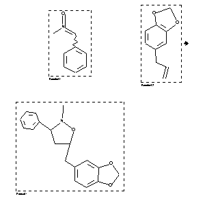

|  |
| FA | RX(1); FLST(1); RX(1) |
Reaction (1 of 1)
| Reaction ID | 1113770 |
| Reactant BRN | 2458; 136380 |
| Reactant | benzylidene-methyl-amine oxide; 5-allyl-benzo[1,3]dioxole |
| Product BRN | 1592388 |
| Product | 5-benzo[1,3]dioxol-5-ylmethyl-2-methyl-3-phenyl-isoxazolidine |
| No. of Reaction Details | 1 |
Reaction Details (1 of 1)
| Reaction Classification | Preparation |
| Time | 24 hour(s) |
| Temperature | 110 |
| Citation Pointer | 39660; Journal; Huisgen,R. et al.; CHBEAM; Chem.Ber.; GE; 101; 6; 1968; 2043-2055; |
Reference (1 of 1)
| Citation Number | 39660 |
| Document Type | Journal |
| Authors | Huisgen,R. et al. |
| CODEN | CHBEAM |
| Journal Title | Chem.Ber. |
| Language Code | GE |
| (Series) Volume | 101 |
| Number | 6 |
| Publication Year | 1968 |
| Page | 2043-2055 |